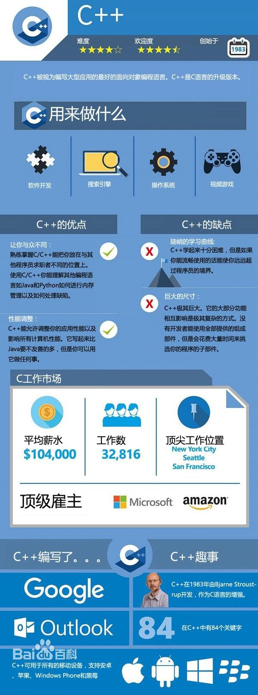

-
C++
C++是C语言的继承，它既可以进行C语言的过程化程序设计，又可以进行以抽象数据类型为特点的基于对象的程序设计，还可以进行以继承和多态为特点的面向对象的程序设计。C++擅长面向对象程序设计的同时，还可以进行基于过程的程序设计，因而C++就适应的问题规模而论，大小由之。
C++不仅拥有计算机高效运行的实用性特征，同时还致力于提高大规模程序的编程质量与程序设计语言的问题描述能力。
- 中文名
- C++语言
- 外文名
- The C++ Programming Language/c plus plus
- 类 别
- 计算机程序设计语言
- 创始人
- Bjarne Stroustrup
- 创始公司
- 贝尔实验室
- 基本内容
- 类、封装、重载、继承、模版
发展历程
1971年，瑞士联邦技术学院N.Wirth教授发明了Pascal语言。Pascal语言语法严谨，层次分明，程序易写，具有很强的可读性，是第一个结构化的编程语言。
20世纪70年代中期，Bjarne Stroustrup在剑桥大学计算机中心工作。他使用过Simula和ALGOL，接触过C。他对Simula的类体系感受颇深，对ALGOL的结构也很有研究，深知运行效率的意义。既要编程简单、正确可靠，又要运行高效、可移植，是Bjarne Stroustrup的初衷。以C为背景，以Simula思想为基础，正好符合他的设想。1979年，Bjame Sgoustrup到了Bell实验室，开始从事将C改良为带类的C（C with classes）的工作。1983年该语言被正式命名为C++。自从C++被发明以来，它经历了3次主要的修订，每一次修订都为C++增加了新的特征并作了一些修改。第一次修订是在1985年，第二次修订是在1990年，而第三次修订发生在c++的标准化过程中。在20世纪90年代早期，人们开始为C++建立一个标准，并成立了一个ANSI和ISO（Intemational Standards Organization）国际标准化组织的联合标准化委员会。该委员会在1994年1月25曰提出了第一个标准化草案。在这个草案中，委员会在保持Stroustrup最初定义的所有特征的同时，还增加了一些新的特征。
在完成C++标准化的第一个草案后不久，发生了一件事情使得C++标准被极大地扩展了：Alexander stepanov创建了标准模板库（Standard Template Library，STL）。STL不仅功能强大，同时非常优雅，然而，它也是非常庞大的。在通过了第一个草案之后，委员会投票并通过了将STL包含到C++标准中的提议。STL对C++的扩展超出了C++的最初定义范围。虽然在标准中增加STL是个很重要的决定，但也因此延缓了C++标准化的进程。
委员会于1997年11月14日通过了该标准的最终草案，1998年，C++的ANSI/IS0标准被投入使用。通常，这个版本的C++被认为是标准C++。所有的主流C++编译器都支持这个版本的C++，包括微软的Visual C++和Borland公司的C++Builder。
编程开发
集成开发环境(IDE)
Visual Studio (Visual C++)
C++ Builder
kDevelop
Anjuta
Code::Blocks：开放源码的全功能的跨平台C/C++集成开发环境 。
Visual Mingw
Ideone
Eclipse CDT
Compilr
Code Lite
Netbeans C++
编译器
Dev C++
Ultimate++
Digital Mars
C-Free
MinGW
Tiny C Compiler
语言特点
支持数据封装
在C++中，类是支持数据封装的工具，对象则是数据封装的实现。C++通过建立用户定义类支持数据封装和数据隐藏。
在面向对象的程序设计中，将数据和对该数据进行合法操作的函数封装在一起作为一个类的定义。对象被说明为具有一个给定类的变量。每个给定类的对象包含这个类所规定的若干私有成员、公有成员及保护成员。完好定义的类一旦建立，就可看成完全封装的实体，可以作为一个整体单元使用。类的实际内部工作隐藏起来，使用完好定义的类的用户不需要知道类是如何工作的，只要知道如何使用它即可。
支持继承和重用
在C++现有类的基础上可以声明新类型，这就是继承和重用的思想。通过继承和重用可以更有效地组织程序结构，明确类间关系，并且充分利用已有的类来完成更复杂、深入的开发。新定义的类为子类，成为派生类。它可以从父类那里继承所有非私有的属性和方法，作为自己的成员。
支持多态性
采用多态性为每个类指定表现行为。多态性形成由父类和它们的子类组成的一个树型结构。在这个树中的每个子类可以接收一个或多个具有相同名字的消息。当一个消息被这个树中一个类的一个对象接收时，这个对象动态地决定给予子类对象的消息的某种用法。多态性的这一特性允许使用高级抽象。
继承性和多态性的组合，可以轻易地生成一系列虽然类似但独一无二的对象。由于继承性，这些对象共享许多相似的特征。由于多态性，一个对象可有独特的表现方式，而另一个对象有另一种表现方式。
工作原理
C++语言的程序因为要体现高性能，所以都是编译型的。但其开发环境，为了方便测试，将调试环境做成解释型的。即开发过程中，以解释型的逐条语句执行方式来进行调试，以编译型的脱离开发环境而启动运行的方式来生成程序最终的执行代码。
生成程序是指将源码（C++语句）转换成一个可以运行的应用程序的过程。如果程序的编写是正确的，那么通常只需按一个功能键，即可搞定这个过程。该过程实际上分成两个步骤。
第一步是对程序进行编译，这需要用到编译器（compiler）。编译器将C++语句转换成机器码(也称为目标码)；如果这个步骤成功，下一步就是对程序进行链接，这需要用到链接器（linker）。链接器将编译获得机器码与C++库中的代码进行合并。C++库包含了执行某些常见任务的函数（“函数”是子程序的另一种称呼）。例如，一个C++库中包含标准的平方根函数sqrt，所以不必亲自计算平方根。C++库中还包含一些子程序，它们把数据发送到显示器，并知道如何读写硬盘上的数据文件。
学习指南
入门书籍
《C++程序设计教程》，钱能
《易学C++》，潘嘉杰
《大话设计模式》，程杰
《C++编程规范:101条规则、准则与最佳实践》，刘基诚
《C和C++程序员面试秘籍》，董山海
进阶书籍
《C++程序设计语言》英文第四版，Bjarne Stroustrup
《C++ Primer 第5版（英文版）》，Stanley Lippman、Josee Laoie、Barbara Moo
《C++标准库：自学教程与参考手册（第2版）（英文版）》，Nicolai Josuttis
《C++ Concurrency in Action|C++ 并发实战》，Anthony Wiliams
《C和C++安全编码（第2版）（英文版）》，Robert Seacord
语言基础
基本类型
数据类型指明变量或表达式的状态和行为，数据类型决定了数的取值范围和允许执行的运算符集。c++语言数据类型可以分为两大类：基本类型和引用类型。基本类型是指不能再分解的数据类型，其数据在函数的调用中是以传值方式工作的；引用类型有时也称复合类型，它是可以分解为基本类型的数据类型，其数据在函数调用中是以传址方式来工作的。
整型
整数常量
整数常量是不带小数的数值，用来表示正负数。例2—2中Ox55、0x55ff、1000000都是c++语言的整数常量。
c++语言的整数常量有三种形式：十进制、八进制、十六迸制。
（1）十进制整数是由不以0开头的0～9的数字组成的数据。
（2）八进制整数是由以0开头的0～7的数字组成的数据。
（3）十六进制整数是由以0x或0x开头的0～9的数字及A～F的字母(大小写字母均可)组成的数据。
例如：
0，63，83是十进制数。
00，077，0123是八进制数。
0x0，Ox0，0x53，0x53，0x3f，0x3f是十六进制数。
整数常量的取值范围是有限的，它的大小取决于此类整型数的类型，与所使用的进制形式无关。
整型变量类型
整型变量类型有byte，short，int，long四种说明符，它们都是有符号整型变量类型。
（1）byte类型。
byte类型说明一个带符号的8位整型变量。由于不同的机器对多字节数据的存储方式不同，可能是从低字节向高字节存储，也可能是从高字节向低字节存储。这样，在分析网络协议或文件格式时，为了解决不同机器上的字节存储顺序问题，用byte类型来表示数据是合适的。
（2）short类型。
short类型说明一个带符号的16位整型变量。short类型限制了数据的存储应为先高字节，后低字节。
（3）int类型。
int类型说明一个带符号的32位整型变量。int类型是一种最丰富、最有效的类型。它最常用于计数、数组访问和整数运算。
（4）long类型。
long类型说明一个带符号的64位整型变量。对于大型计算，常常会遇到很大的整数，并超出int所表示的范围，这时要使用long类型。
浮点型
浮点数常量
浮点数是带有小数的十进制数，可用一般表示法或科学记数法表示。0.23f、0.7e-3都是c++语言的浮点数常量。
（1）一般表示法：十进制整数+小数点+十进制小数。
（2）科学记数法：十进制整数+小数点+十进制小数+E（或e）+正负号+指数。
例如：3.14159，0.567，9777.12是一般表示法形式，1.234e5，4.90867e-2是科学记数法形式。
c++语言的浮点数常量在机器中有单精度和双精度之分。单精度以32位形式存放，用f/F做后缀标记(可以省略)；双精度则以64位形式存放。当一个浮点数常量没有特别指定精度时，则它为双精度浮点数常量。
浮点变量类型
浮点变量也称实数变量，用于需要精确到小数的函数运算中，有float和double两种类型说明符。
（1）float类型。
float类型是一个位数为32位的单精度浮点数。它具有运行速度较快，占用空间较少的特点。
（2）double类型。
double类型是一个位数为64的双精度浮点数。双精度数在某些具有优化和高速运算能力的现代处理机上运算比单精度数快。双精度类型double比单精度类型float具有更高的精度和更大表示范围，常常使用。
字符型
字符型常量
字符型常量是指由单引号括起来的单个字符。
例如：’a’，’A’，’z’，‘$’，’?’。
注意：’a’和’A’是两个不同的字符常量。
除了以上形式的字符常量外，c++语言还允许使用一种以“\”开头的特殊形式的字符常量。这种字符常量称为转义字符，用来表示一些不可显示的或有特殊意义的字符。
字符型变量
字符型变量的类型说明符为char，它在机器中占8位，其范围为0～255。
注意：字符型变量只能存放一个字符，不能存放多个字符，例如：
|
1
|
char a='am'; |
这样定义赋值是错误的。
布尔型
布尔常量
布尔常量只有两个值：“true”和“false”，表示“真”和“假”，均为关键词，在机器中位长为8位。
布尔型变量
布尔型变量的类型说明符为booI，用来表示逻辑值。
运算符与表达式
C++语言中定义了丰富的运算符，如算术运算符、关系运算符、逻辑运算符等等，有些运算符需要两个操作数，使用形式为
<操作数1>运算符<操作数2>
这样的运算符称为二元运算符（或二目运算符）。另一些运算符只需要一个操作数，称为一元运算符（或单目运算符）。
运算符具有优先级与结合性。当一个表达式包含多个运算符时，先进行优先级高的运算，再进行优先级低的运算。如果表达式中出现了多个相同优先级的运算，运算顺序就要看运算符的结合性了。所谓结合性，是指当一个操作数左右两边的运算符优先级相同时，按什么样的顺序进行运算，是自左向右，还是自右向左。例如，我们熟悉的算术表达式6+5-2中,“+”、 “-”是同级运算符，那么是先算5-2，还是先算6+5？这就取决于算术运算符的结合性。由于算术运算符的结合性为自左向右，所以应先算6+5，然后再算11-2。
算术运算符与算术表达式
C++中的算术运算符包括基本的算术运算符和自增、自减运算符。由算术运算符、操作数和括号构成的表达式称为算术表达式。
基本算术运算符有：+（加）、-（减或负号）、*（乘）、/（除）、%（取余）。其中“-”作为负号时为一元运算符，其余都为二元运算符。这些基本算术运算符的意义与数学中相应符号的意义是一致的。它们之间的相对优先级关系与数学中的也是一致的，即先乘除、后加减，同级运算自左向右进行。使用算术运算符要注意以下几点：
①“%”是取余运算，只能用于整型操作数。表达式a%b的结果为a/b的余数。 “%”的优先级与“/”相同。
②当“/”用于两整型操作数相除时，其结果取商的整数部分，小数部分被自动舍弃。因此，表达式1/2的结果为0，这一点需要特别注意。
⑧C++中的“++” （自增）、 “--” （自减）运算符是使用方便且效率很高的两个运算符，它们都是一元运算符。这两个运算符都有前置和后置两种使用形式
无论写成前置或后置的形式，它们的作用都是将操作数的值增1（减1）后，重新写回该操作数在内存中的原有位置。所以，如果变量i原来的值是1，计算表达式i++后，表达式的结果为2，并且i的值也被改变为2。但是，当自增、自减运算的结果要被用于继续参与其它操作时，前置与后置时的情况就完全不同了。例如，如果i的值为l，则下列两条语句的执行结果是不一样的：
|
1
2
|
cout<<i++；cout<<++i； |
第一条语句首先输出i当前的值1，然后i自增，其值变为2；第二条语句首先使i自增为2，然后输出i的值2。
赋值运算符与赋值表达式
C++提供了几个赋值运算符，最简单的赋值运算符就是“=”。带有赋值运算符的表达式被称为赋值表达式。例如，m=m+6就是一个赋值表达式。赋值表达式的作用就是将等号右边表达式的值赋给等号左边的对象。赋值表达式的类型为等号左边对象的类型，表达式的结果为等号左边对象被赋值后的值，运算的结合性为自右向左。请看下列赋值表达式的例子。
|
1
|
n=1 |
表达式值为1。
|
1
|
a=b=c=2 |
这个表达式从右向左运算，在c被更新为2后，表达式c=2的值为2，接着b的值被更新为2，最后a被赋值为2。
|
1
|
a=3+(c=4) |
表达式值为7，a的值为7，c为4。
除了“=”以外，C++还提供了10种复合的赋值运算符：+=，-=，*=，/=，%=，<<=，>>=，&=，“=，|=。其中，前五个运算符是赋值运算符与算术运算符复合而成的，后五个是赋值运算符与位运算符复合而成的。关于位运算，稍后再做介绍。这里10种运算符的优先级与“=”相同，结合性也是自右向左。现在举例说明复合赋值运算符的功能。
|
1
2
|
b+=2;//等价于b=b+2 x*=y+3;//等价于x=x*(y+3) |
|
1
|
如果在赋值表达式后面加上分号，便成为了赋值语句。例如： |
b=b+2：便是一个赋值语句，它实现的功能与赋值表达式相同。赋值表达式与赋值语句的不同点在于：赋值表达式可以作为一个更复杂表达式的一部分，继续参与运算；而赋值语句不能。
逗号运算符与逗号表达式
在C++中，逗号也是一个运算符，它的使用形式为
<表达式1>，<表达式2>，…，<表达式n>求解顺序为，先求解表达式1，再求解表达式2，最后求解表达式n的值。逗号表达式的最终结果为表达式n的值。例如：
|
1
|
x=2*5,x*4 |
表达式的结果为40。
关系运算符和关系表达式
关系运算符即比较符。
用关系运算符将两个表达式连接起来就是关系表达式。关系表达式是一种最简单的逻辑表达式。例如：
|
1
2
3
|
x>5 x+y<=20 c==a+b |
注意“==”（等于）是连续的两个等号，不要误写为赋值运算符“=”。
关系表达式一般用于判断是否符合某一条件。关系表达式的结果类型为bool，值只能是true或false。条件满足为true，条件不满足为false。例如，当x=t时，x>5的结果就为false。
逻辑运算符与逻辑表达式
只有简单的关系比较是远不能满足编程需要的，还需要用逻辑运算符将简单的关系表达式连接起来构成较复杂的逻辑表达式。逻辑表达式的结果类型也为bool，值只能为true或false。
“!”是一元运算符，使用形式是： !操作数。非运算的作用是对操作数取反。如果操作数a的值为true，则表达式!a的值为false：如果操作数a的值为false，则表达式!a的值为true。
“&&”是二元运算符。“&&”运算的作用是求两个操作数的逻辑与。只有当两个操作数的值都为true时，与运算的结果才为true，其它情况下与运算的结果均为false。
“||”也是二元运算符。 “||”运算的作用是求两个操作数的逻辑或。只有当两个操作数的值都为false时，或运算的结果才为false，其它情况下或运算的结果均为true。
类和对象
类所表示的一组对象十分相似，可以作为模板来有效的创建对象，利用类可以产生很多的对象类所代表的事物或者概念都是抽象的。在存取Private类型数据或者函数的时候，只有类本身声明的函数才是被允许的。类在与外部连接时，利用的就是Public共有类型函数，任何外部函数的访问都是运行的。
对象主要是对客观事物的某个实体进行描述，它作为一个单位，共同组成了系统，它的组成是一组属性和一组服务，这组服务操作于这组属性。属性和服务是对象构成众多要素中的两种，属性的实质是一个数据项，主要是对对象静态特性进行描述，服务的实质是一个操作序列，主要是对对象动态特征进行描述。
关键字
关键字（keyword）是整个语言范围内预先保留的标识符。每个C++关键字都有特殊的含义。经过预处理后，关键字从预处理记号（preprocessing-token）中区出来，剩下的标识符作为记号（token），用于声明对象、函数、类型、命名空间等。不能声明与关键字同名的标识符。
各个版本的ISO C++都规定以下划线接大写字母起始的标识符保留给实现。编译器可以用这些保留标识符作为扩展关键字，这不保证可移植性。以下讨论ISO C++所保留的关键字。
ISO C++ 98 关键字共63个，此处严格按标准原文排版：
|
asm
|
do
|
if
|
return
|
typedef
|
|
auto
|
double
|
inline
|
short
|
typeid
|
|
bool
|
dynamic_cast
|
int
|
signed
|
typename
|
|
break
|
else
|
long
|
sizeof
|
union
|
|
case
|
enum
|
mutable
|
static
|
unsigned
|
|
catch
|
explicit
|
namespace
|
static_cast
|
using
|
|
char
|
export
|
new
|
struct
|
virtual
|
|
class
|
extern
|
operator
|
switch
|
void
|
|
const
|
false
|
private
|
template
|
volatile
|
|
const_cast
|
float
|
protected
|
this
|
wchar_t
|
|
continue
|
for
|
public
|
throw
|
while
|
|
default
|
friend
|
register
|
true
|
|
|
delete
|
goto
|
reinterpret_cast
|
try
|
语言标准
C++ 98 标准
C++标准第一版，1998年发布。正式名称为ISO/IEC 14882:1998 。
C++ 03 标准
C++标准第二版，2003年发布。正式名称为ISO/IEC 14882:2003 。
C++ 11 标准
C++标准第三版，2011年8月12日发布。正式名称为ISO/IEC 14882:2011 。
C++11对容器类的方法做了三项主要修改。
首先，新增的右值引用使得能够给容器提供移动语义。其次，由于新增了模板类initilizer_list，因此新增了将initilizer_list作为参数的构造函数和赋值运算符。第三，新增的可变参数模板（variadic template）和函数参数包（parameter pack）使得可以提供就地创建（emplacement）方法。
C++ 14 标准
C++标准第四版，2014年8月18日发布。正式名称为ISO/IEC 14882:2014
。
C++14是C++11的增量更新，主要是支持普通函数的返回类型推演，泛型 lambda，扩展的 lambda 捕获，对 constexpr 函数限制的修订，constexpr变量模板化等 。
技术应用
科学计算
在科学计算领域，FORTRAN是使用最多的语言之一。但是C++凭借先进的数值计算库、泛型编程等优势在这一领域也应用颇多。
网络软件
C++拥有很多成熟的用于网络通信的库，其中最具有代表性的是跨平台的、重量级的ACE库，该库可以说是C++语言最重要的成果之一，在许多重要的企业、部门甚至是军方都有应用。
操作系统
在该领域，C语言是主要使用的编程语言。但是C++凭借其对C的兼容性，面向对象性质也开始在该领域有一席之地。
语言评价

C++是在C语言的基础上开发的一种面向对象编程语言，应用非常广泛。常用于系统开发，引擎开发等应用领域，支持类、封装、继承、多态等特性。C++语言灵活，运算符的数据结构丰富、具有结构化控制语句、程序执行效率高，而且同时具有高级语言与汇编语言的优点。
C++语言是对C语言的扩充，从Simula中吸取了类，从ALGOL语言中吸取了运算符的一名多用、引用和在分程序中任何位置均可说明变量，综合了Ada语言的类属和Clu语言的模块特点，形成了抽象类，从Ada Clu和ML等语言吸取了异常处理，从BCPL语言中吸取了用//表示注释C++语言保持了C语言的紧凑灵活、高效以及易于移植性强等优点，它对数据抽象的支持主要在于类概念和机制，对面向对象风范的支持主要通过虚拟机制函数因C++语言既有数据抽象和面向对象能力，运行性能高，加上C语言的普及，而从C语言到C++语言的过渡较为平滑，以及C++语言与C语言的兼容程度可使数量巨大的C语言程序能方便地在C++语言环境中复用，使C++语言在短短几年内能流行。
常见问题
问题1：学习C++大约需要多久？有些书籍上说几十天就能学会C++这是真的吗？
回答：在高校中安排的C++课程约为半年至一年左右，但事实上要精通C++，这点时间是远远不够的。C++并不只是一门简单的计算机语言，而是逐渐形成了一个学科体系。要熟练运用C++，做出界面美观、功能强大的程序，还必须对数据结构、STL、设计模式等各个专题进行深入学习。因此，学习C++所需时间取决于学习者本身的基础和期望达到的学习效果。如果一位零基础的初学者要掌握C++语言本身的所有特性，1~2年的时间是比较正常的。至于说几十天能够学会C++，对于已经精通其他计算机语言的学习者来说也是可能的。
问题2：学习C++需要什么样的数学和英语水平？学历较低可以学C++么？
回答：学习程序设计必然会用到数学和英语。至少输入的代码基本都是英文字母，我们要用的算法多少和数学、逻辑学有些关系。因此，彻底没有数学和英语基础就学习程序设计真的很困难。一般认为，有初中或以上的数学和英语基础就可以学习程序设计了。在现实中，很多中学生已经成为了编程高手。如果已经忘记以前所学的数学和英语知识，建议略花一些时间去回顾一下。数学和英语对学习程序设计还是有莫大的裨益。数学能够锻炼一个人的逻辑思维能力，使接受算法的速度更快；英语则有助于学习者看懂计算机的反馈信息、阅读更多原版的技术资料。
问题3：以前学习过程序设计，时间长都忘记了，现在不从事计算机行业。随着年龄增加，学习能力和记忆力都可能有所减弱，这样能学习C++么？
回答：学习能力和记忆力的确会随年龄受到影响。但是学习C++本来就是一个周期相对较长的过程，最重要的是保持学习的热情和耐心。C++语言的基础部分已经基本固定，不会经常发生重大变化，因此即使年龄稍大，经过努力后掌握C++是完全可能的。
问题4：很多网友说学习C++之前要学C语言，是这样吗？
回答：C语言的部分语法的确与C++相似甚至相同。如果有C语言的基础学习C++肯定会更快。但是，这并不意味着学习C++之前必须要学C语言，而且对于初学者来说在短时间内接触这两种语言反而会造成部分概念的混淆。因此，如果你的目标是C++而不是C语言，那么不必特意在学习C++之前先去学C语言。
问题5：现在学习C++主要有哪些集成开发环境？哪个最适合初学者？
回答：首先需要说明的是，集成开发环境和编译器又不是一回事情。通常集成开发环境可以搭配一种或多种编译器。编译器的功能是将C++源程序转变成可执行的程序，而集成开发环境则是一系列代码编辑、调试和管理工具。目前Windows操作系统下使用比较广泛的集成开发环境有微软的Visual Studio（包括6.0版、2010版和2012版等）、Dev-C++、Eclipse、Code::Blocks等。从集成开发环境的界面友好程度来看，微软的Visual Studio有着不小的优势。并且Visual
Studio的市场占有率也是非常高的，很多院校、培训机构、企业都在使用。因此，建议有条件的初学者优先选用Visual Studio。如果实在无法安装Visual Studio，那么Dev-C++或Code::Blocks也可以作为替代。
问题6：如何保持学习C++的积极性和热情？
回答：对于大多数初学者来说，学习C++语言还是有一定难度的。因此，必须要掌握好学习的速度和节奏，不要对自己产生过大的压力。有些读者说只需要3周就能把小半本书看完，可是剩下的那部分却始终看不进去。事实上这说明了前面的小半本书还没有完全消化吸收——暴饮暴食自然就要没胃口了。建议初学者不要贪急贪快，那样很容易毁掉自己的学习热情。如果为自己订制了一个相对长期的、宽松的学习计划，反而更容易培养自己的积极性。
问题7：零基础的初学者应该学VB还是学C++？
回答：不得不承认，用Visual Basic制作一个Windows窗口界面的程序比C++方便得多。因此，初学者可能在学习Visual Basic的时候觉得更容易，更有成就感。Basic和C++属于计算机高级语言中的两支路线，各有所长。但是，从计算机高级语言的发展趋势来说，C++更具有代表性。如果只是想了解一下程序设计，学习Visual Basic也未尝不可。